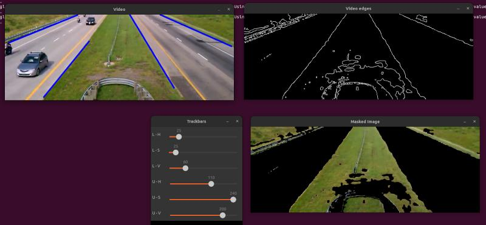
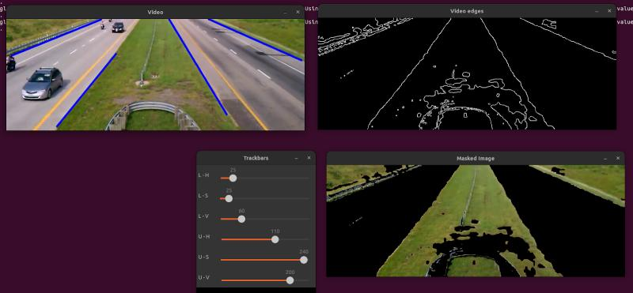

About Louis Le Lay
Hello! I'm Louis Le Lay, a Robotics Engineering student at Sorbonne University and currently pursuing a dual degree in Information Technology at ETS Montréal. I specialize in computer vision and simulation with extensive experience in ROS, ROS2, SLAM, and machine learning.
Having worked with Airbus on robotic automation and at the University of Tokyo on semantic sensor fusion, I thrive in AI-driven robotics projects that integrate perception and control.
🔧 Core Skills
- Programming & Tools: C++, Python, ROS, ROS2, Git, Docker, Gazebo, Mujoco, IsaacSim, IsaacLab, PyBullet, MATLAB
- Core Competencies: Sensor Fusion, SLAM, VR Simulation, Machine Learning, Reinforcement Learning, Sim2Real Transfer, Control Systems
📩 Contact
Background
💼 Experience
International Research Student – University of Tokyo – Tokyo, Japan (Jun 2024 – Aug 2024)
- Developed ROS-based sensor fusion and calibration packages integrating LiDAR and RGBD data.
- Implemented YOLO-based object detection for enhanced robotic perception.
Robotics Engineer Student – Airbus – Paris, France (Aug 2023 – Jun 2024)
- Designed a robotic proof-of-concept automating A320 cockpit functions.
- Secured executive approval for factory implementation with a projected 13% productivity increase.
🎓 Education
Master of Engineering – Robotics
- Sorbonne University – Paris, France (2022 – 2025)
Master of Engineering – Information Technology
- ETS Montréal – Montréal, Canada (2024 – 2025)
📜 Certifications
- MIT - Machine Learning with Python (Dec 2023)
- NVIDIA - Learn OpenUSD: An Introduction (Nov 2024)
Projects
Disney BD-X Robot Locomotion Training
Developed a reinforcement learning environment for biped robot locomotion, specifically for the BD-X robot from Disney Research, ensuring compatibility with existing RL frameworks. The environment was designed and implemented with a focus on efficient training and simulation, leading to its successful integration into the IsaacLab repository. {GitHub Repo}
VR-Based Throwing Accuracy Study
Developed a VR simulation to study the impact of visual feedback on throwing accuracy as part of a ball-throwing precision study. The project aimed to investigate skill transfer through VR-based training by building a detailed VR model and conducting experimental analysis. The findings demonstrated the effectiveness of VR in skill training, highlighting its potential for improving motor learning and accuracy. {GitHub Repo}
Bipedal Wheeled Robot
Developed a wheeled bipedal robot in SolidWorks, focusing on an innovative mechanism that eliminates cantilevering for enhanced stability. After 3D printing the structure, I programmed it using ROS2 for seamless locomotion control. The final design exhibits high agility in diverse environments and demonstrates robust motion capabilities. GitHub Repo
Experimental Equipment for Orthostatic Exercise – University of Tokyo
Created a robotic assistive system to facilitate sit-to-stand motion from a soft chair, primarily targeting elderly individuals. Using MATLAB for both EMG-based intent detection and real-time seat hardening, the project significantly reduced muscle strain, as validated by camera and EMG analyses. GitHub Repo
Semantic Sensor Fusion for Unitree Go1 – University of Tokyo
Enhanced the Go1 quadruped robot’s perception by fusing LiDAR and Realsense camera data via ROS, enabling a semantic mapping approach using machine learning. This setup allows the robot to label and interpret its surroundings, supporting tasks like person-following and object-centric SLAM.
Lane Detection and Vehicle Tracking – Sorbonne University
Implemented a computer vision pipeline in C++ (OpenCV) that detects road lanes via edge detection and Hough transforms, then identifies and counts vehicles using bounding box tracking. The solution performs reliably under varying conditions, demonstrating robust detection accuracy and efficient vehicle counting. GitHub Repo
 

8 DOF Quadruped Robot
Conceived a low-cost quadruped inspired by Boston Dynamics’ SPOT and MIT’s Cheetah, starting with a 3D-printed leg prototype driven by two servo motors and an Arduino. The current setup lays groundwork for a full 12 DOF upgrade, with plans to implement advanced leg control algorithms for more dynamic movement.
C++ Game – Sorbonne University
Designed a minimalist 1v1 game on an 8×8 pixel grid entirely in C++, supporting both keyboard and gamepad inputs without relying on any external game engine. This project showcased core game-loop coding, collision handling, and rendering logic in a compact yet fully functional environment. GitHub Repo
Open Source Contributions
My recent contributions to open-source projects: